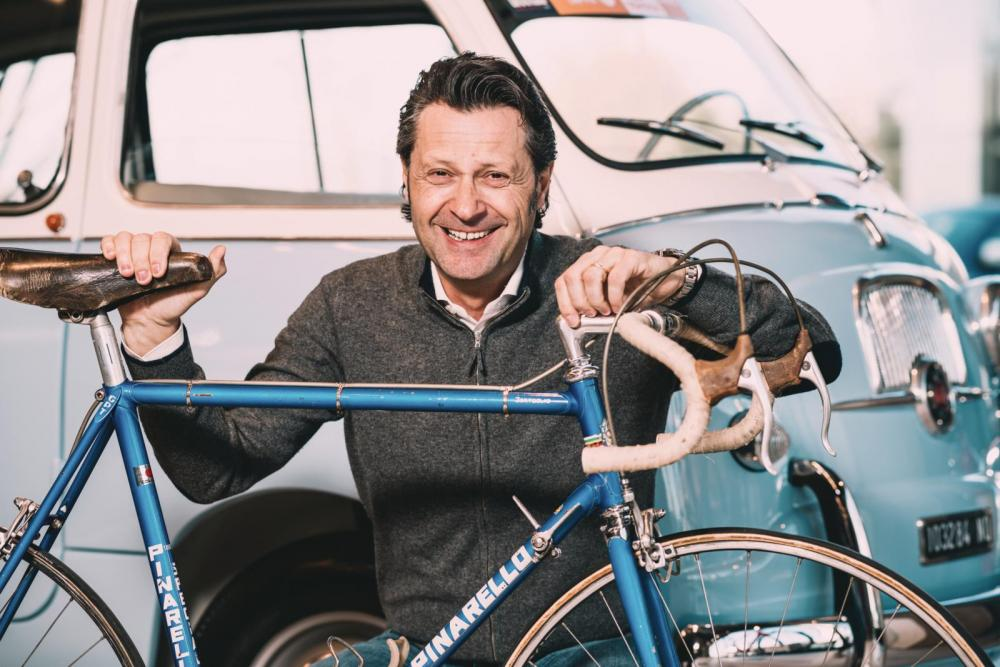
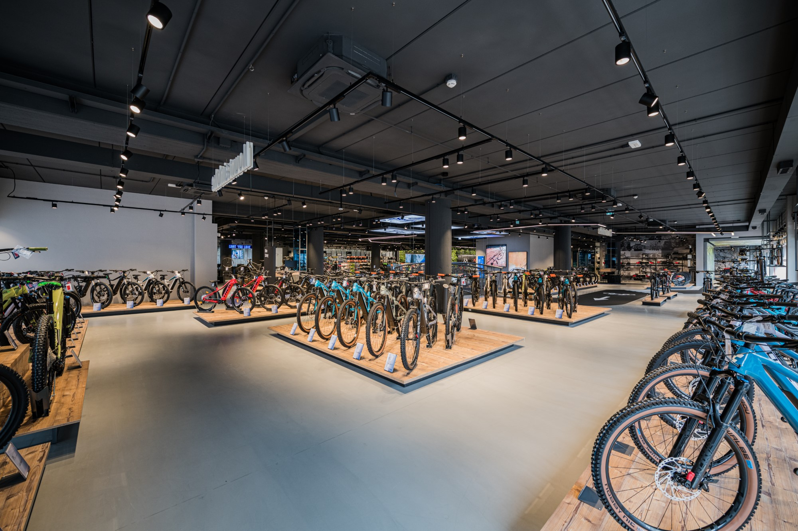

La nostra storia ha radici profonde nell'amore per la bicicletta e la sua capacità di connettere le persone con il mondo che le circonda. Fin dall'inizio, ci siamo impegnati a creare biciclette di alta qualità che offrano prestazioni superiori, comfort e affidabilità. I nostri prodotti sono stati sviluppati e perfezionati nel corso degli anni, sfruttando le ultime innovazioni tecnologiche e l'esperienza acquisita nel settore.


Con il passare degli anni, ci siamo evoluti per soddisfare le esigenze dei ciclisti moderni. Il nostro sito di vendita internazionale ci ha permesso di raggiungere un pubblico globale, offrendo una vasta selezione di biciclette per ogni stile di guida e livello di esperienza. Oltre ai nostri prodotti, forniamo informazioni dettagliate sui prodotti e un servizio clienti attento e affidabile per guidare i nostri clienti nella scelta della bicicletta perfetta per loro.
Ma la nostra azienda non si limita a vendere biciclette. Siamo impegnati a promuovere uno stile di vita sano e sostenibile, incoraggiando le persone a scoprire la gioia e i benefici della bicicletta. Collaboriamo con organizzazioni che promuovono la mobilità urbana sostenibile e sosteniamo progetti che contribuiscono alla preservazione dell'ambiente.